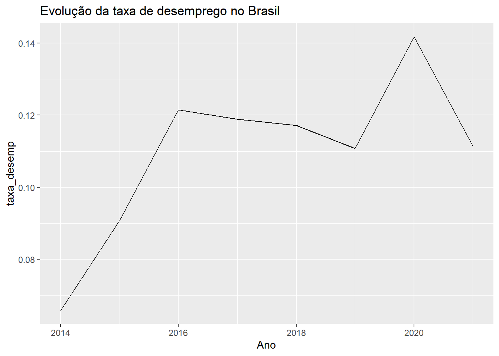
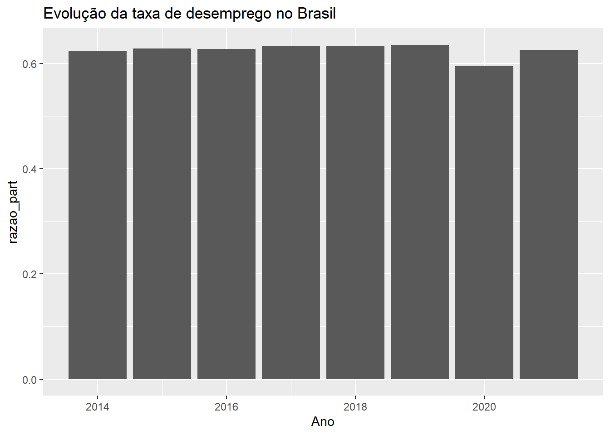

library(dplyr)
library(ggplot2)12 Introdução ao R
12.1 Introdução
Até este ponto do curso, utilizamos Python como principal ferramenta para aprender programação, manipular dados, produzir visualizações e realizar análises empíricas. Python é atualmente uma das linguagens mais populares do mundo e possui aplicações que vão muito além da análise de dados, sendo amplamente utilizada em áreas como desenvolvimento de software, automação, inteligência artificial e computação científica.
No entanto, Python não é a única linguagem relevante para o trabalho de economistas. Em diversos programas de pós-graduação, centros de pesquisa, órgãos governamentais e equipes de ciência de dados, o R continua sendo uma das ferramentas mais utilizadas para análise estatística e econométrica. Muitas bibliotecas de ponta para métodos estatísticos, visualização de dados e inferência causal são desenvolvidas inicialmente em R e posteriormente adaptadas para outras linguagens.
Por esse motivo, mesmo que Python seja suficiente para grande parte das tarefas que realizamos ao longo deste curso, é importante que economistas tenham familiaridade com o ecossistema do R. O objetivo deste capítulo não é formar especialistas na linguagem, mas apresentar seus principais conceitos, sua lógica de funcionamento e as semelhanças e diferenças em relação ao Python. Ao final, você deverá ser capaz de ler códigos simples em R, realizar operações básicas de manipulação de dados e compreender a estrutura das bibliotecas mais utilizadas na pesquisa aplicada em Economia.
12.1.1 RStudio
Assim como no Python, existem diferentes maneiras de escrever e executar códigos em R. Embora seja possível utilizar a linguagem diretamente por meio de um terminal ou interpretador simples, a prática mais comum é trabalhar com uma IDE. No ecossistema do R, a IDE mais popular é o RStudio. Desenvolvido especificamente para a linguagem, ele se tornou o ambiente de trabalho padrão para grande parte dos pesquisadores, analistas de dados e economistas que utilizam R em suas atividades profissionais e acadêmicas.
Para utilizá-lo, é necessário instalar primeiro o próprio R, que funciona como o mecanismo responsável por interpretar e executar os códigos. Em seguida, instala-se o RStudio, que fornece uma interface gráfica mais amigável para interagir com a linguagem. Do ponto de vista da organização da tela, o RStudio será bastante familiar para quem já trabalhou com o Spyder durante este curso. O ambiente normalmente é dividido em painéis que permitem editar scripts, executar comandos de forma interativa, visualizar objetos armazenados na memória, acompanhar gráficos gerados pelo código e navegar pelos arquivos do projeto. Essa integração facilita o desenvolvimento de análises empíricas ao concentrar em um único local praticamente todas as ferramentas utilizadas no fluxo de trabalho de um pesquisador.
Ao longo deste capítulo utilizaremos o RStudio como ambiente principal. Como os conceitos fundamentais de programação já foram apresentados em Python, nosso foco será compreender a sintaxe do R e a lógica das ferramentas mais utilizadas pelos economistas, e não os detalhes de configuração do ambiente.
12.1.2 Pacotes de terceiros
Assim como ocorre no Python, a instalação básica do R fornece apenas um conjunto limitado de funcionalidades. Grande parte das tarefas realizadas por pesquisadores e analistas depende de bibliotecas desenvolvidas pela comunidade. A instalação de um pacote normalmente é feita apenas uma vez por computador utilizando a função install.packages(). Por exemplo:
install.packages("tidyverse")Após instalado, o pacote deve ser carregado em cada nova sessão de trabalho por meio da função library():
library(tidyverse)Essa separação entre instalação e carregamento é uma das primeiras diferenças que usuários de Python costumam notar. Enquanto no Python geralmente utilizamos comandos como pip install no terminal e import dentro do código, no R tanto a instalação quanto o carregamento podem ser realizados diretamente a partir do próprio ambiente da linguagem. O ecossistema do R possui atualmente dezenas de milhares de pacotes disponíveis gratuitamente, com destaque para os pacotes estatísticos e econométricos. Essa enorme coleção de bibliotecas é um dos principais motivos para a ampla adoção da linguagem em pesquisa acadêmica e análise aplicada.
12.1.3 Pré-requisitos
Neste capítulo utilizaremos duas das bibliotecas mais populares do ecossistema do R. O pacote dplyr será empregado para manipulação e transformação de dados, oferecendo ferramentas para filtrar observações, selecionar variáveis, criar novas colunas e produzir estatísticas agregadas. Já o pacote ggplot2 será utilizado para a construção de gráficos e visualizações, sendo atualmente uma das ferramentas mais utilizadas para análise exploratória de dados e apresentação de resultados em trabalhos acadêmicos. Ambos fazem parte do ecossistema Tidyverse, amplamente adotado por pesquisadores e cientistas de dados.
dplyrggplot2
12.2 Primeiros passos
12.2.1 Hello, World! e instrução de atribuição
Assim como fizemos no Python, a caminhada no R em geral começa com a estruturação do código necessário para implementar um programa que realiza apenas uma operação: mostrar a frase Hello, World! no console da linguagem. No R isso é feito também através da instrução print().
# Função 'print' imprime o texto entre aspas no console do RStudio
print('Hello, World!')[1] "Hello, World!"Podemos realizar a mesma operação primeiro definindo um objeto e atribuindo a ele o texto Hello, World!. Basta então utilizar a instrução print(), que passa a receber como parâmetro o objeto definido. Atenção: em R, apesar do sinal de igualdade funcionar normalmente, a instrução de atribuição padrão da linguagem é a sequência de caracteres <-.
X <- 'Hello, World!'
print(X)[1] "Hello, World!"12.2.2 R como calculadora
Depois do Hello, World!, entender como realizar operações aritméticas simples é o próximo passo em qualquer linguagem de programação. Comecemos por soma, subtração, divisão e multiplicação.
40 + 2[1] 4243 - 1[1] 426 * 7[1] 4284 / 2[1] 42O próximo passo é a potenciação. Diferentemente do Python, aqui a operação é realizada com o símbolo usual de acento circunflexo e não com a sequência de dois asteriscos seguidos.
2 ^ 4[1] 16Assim como no Python, a ordem de preferência das operações pode ser feita com o uso de uma sequência de parênteses.
((38 + 2) * (2 + 2)) / 16[1] 1012.2.3 Operadores lógicos e relacionais
Operadores relacionais, como o símbolo matemático de maior ou menor, servem para comparar objetos definidos e retornam valores lógicos (TRUE ou FALSE) como resultado. Além disso, tal qual no Python, é possível construir expressões condicionais utilizando operadores lógicos:
&é o equivalente no R aoanddo Python|é o equivalente no R aoordo Python!é o equivalente no R aonotdo Python
x <- 10
y <- 200
# teste condicional único
x > 20[1] FALSE# expressões condicionais
x > 20 & y > 20[1] FALSEx > 20 | y > 20[1] TRUE12.3 Objetos
12.3.1 Tipos primitivos
Antes de entrar nos objetos principais da linguagem, convém falar dos principais tipos de dados: character, numeric, integer e logical. A correspondência com o Python é exata, com o primeiro tipo representando um string, o segundo um número com precisão decimal, o terceiro um número inteiro e por fim um dado do tipo booleano, que aceita apenas os valores TRUE ou FALSE. O tipo de um objeto qualquer pode ser obtido através da função primitiva class.
x <- 'tipo de dado: character'
y <- 10
class(x)[1] "character"class(y)[1] "numeric"12.3.2 Vetores e matrizes
Aqui temos uma distinção clara em relação ao Python. Se antes lista era talvez o objeto mais genérico da linguagem e que funcionava como um container de objetos dos mais variados tipos, aqui esse papel é representado pelo vetor c(). A diferença é que vetores nativos do R são objetos de um tipo único, contendo apenas dados numéricos ou do tipo character. Nesse sentido, o vetor primitivo do R pode ser entendido como uma mistura de listas e de arrays do Numpy.
v <- c(10,20,30)
class(v)[1] "numeric"Para a criação de matrizes, usamos a função nativa matrix() em conjunto com c(). O tamanho de cada dimensão da matriz é definido através dos parâmetros nrow e ncol, com byrow determinando a partir de qual dimensão a matriz começara a ser preenchida.
m <- matrix(c(10,20,30,
40,50,60,
70,80,90), nrow=3, ncol=3, byrow=TRUE)
class(m)[1] "matrix" "array" Já a seleção de elementos de vetores e matrizes no R é feita de forma identica a sintaxe utilizada no Numpy. O detalhe relevante aqui é que o R começa a contagem de qualquer sequência no índice 1 e não no índice 0. Assim, para selecionar o primeiro elemento de um vetor utiliza o índice 1, enquanto para selecionar o terceiro elemento da terceira linha de uma matriz é preciso fazer referência à linha de índice 3 e coluna também de índice 3.
v[2][1] 20m[3,3][1] 9012.3.3 Dataframes
Ao longo do curso utilizamos extensivamente objetos do tipo DataFrame do pandas para armazenar e manipular dados usando Python. Em R existe uma estrutura equivalente, conhecida como data.frame, que também organiza as informações em linhas e colunas. Embora o objeto data.frame seja nativo do R, grande parte do ecossistema moderno da linguagem utiliza uma versão chamada tibble, adotada pelos pacotes do ambiente tidyverse. Como veremos ao longo deste capítulo, os tibbles funcionam de maneira muito semelhante aos DataFrames do pandas e constituem a principal estrutura de dados utilizada em análises empíricas realizadas em R.
Tanto no R base quanto no ambiente tidyverse, é possível criar um dataframe de forma bastante parecida com o que fizemos na hora de criar um dataframe no Pandas. A diferença principal está na forma de armazenamento e, principalmente, na eficiência da interação entre um dataframe do tipo tibble com as outras funcionalidades do tidyverse.
nomes_mun <- c('Dracena','São Paulo','Guarulhos')
pop_mun <- c(45474,11451999,1291784)
# R base
municipios1 <- data.frame(nome=nomes_mun,populacao=pop_mun)
# tidyverse
municipios2 <- tibble(nome=nomes_mun,populacao=pop_mun)
print(municipios1) nome populacao
1 Dracena 45474
2 São Paulo 11451999
3 Guarulhos 1291784print(municipios2)# A tibble: 3 × 2
nome populacao
<chr> <dbl>
1 Dracena 45474
2 São Paulo 11451999
3 Guarulhos 129178412.4 Controle de fluxo e iteração
O R também possui estruturas de controle que permitem alterar o fluxo de execução de um programa. Essas estruturas são fundamentais quando desejamos executar diferentes ações dependendo de uma condição ou repetir um mesmo conjunto de instruções várias vezes. A principal diferença de comandos como if, for e while está na sintaxe utilizada pelo R.
- Execução condicional
idade <- 20
if (idade >= 18) {
print('Maior de idade')
} else {
print('Menor de idade')
}[1] "Maior de idade"- Iteração definida
for (i in 1:5) {
print(i)
}[1] 1
[1] 2
[1] 3
[1] 4
[1] 5- Iteração indefinida
contador <- 1
while (contador <= 3) {
print(contador)
contador <- contador + 1
}[1] 1
[1] 2
[1] 312.5 Funções
Seja no R ou no Python, funções personalizadas representam um passo importante na organização do código. Elas permitem agrupar um conjunto de instruções sob um único nome, facilitando a reutilização de tarefas frequentes e reduzindo a repetição de código. Além disso, a divisão de um programa em funções torna o código mais legível, mais fácil de depurar e mais simples de manter, já que eventuais alterações precisam ser feitas em apenas um local.
Seguindo o exemplo do Capítulo 6, vamos criar uma função no R que tem como único objetivo imprimir uma das frases mais emblemáticas da história do cinema:
frase_cinema <- function() {
print('Que a força esteja com você!')
}
frase_cinema()[1] "Que a força esteja com você!"Da mesma forma que o Python, é possível adicionar argumentos posicionais, argumentos com palavras-chave, além do uso de valores default.
total_calc <- function(bill_amount,tip_perc=10){
total <- bill_amount*(1 + tip_perc/100)
print(paste('O valor final da sua conta foi: R$ ',total))
}
# Cálculo do valor final da conta utilizando a gorjeta padrão de 10%
total_calc(bill_amount=10)[1] "O valor final da sua conta foi: R$ 11"# Cálculo do valor final da conta utilizando uma gorjeta de 17%
total_calc(bill_amount=10,tip_perc=17)[1] "O valor final da sua conta foi: R$ 11.7"12.6 Gestão e análise de dados
Assim como utilizamos o pandas para manipular dados em Python, o ecossistema do R oferece um conjunto de ferramentas voltadas para transformação e análise de tabelas. Entre elas, o pacote dplyr, integrante do Tidyverse, tornou-se uma das opções mais populares entre pesquisadores e cientistas de dados. A ideia central do dplyr é tratar a análise de dados como uma sequência de transformações aplicadas a uma tabela. Em vez de executar operações isoladas e armazenar diversos objetos intermediários, descrevemos um fluxo de trabalho no qual os dados passam por etapas sucessivas de filtragem, seleção, criação de variáveis, agrupamento e sumarização.
Para tornar esse processo mais legível, o Tidyverse utiliza o operador pipe (|> ou %>%), que permite encadear operações de forma semelhante a uma linha de produção. Cada etapa recebe o resultado da etapa anterior, produzindo um fluxo de transformação fácil de ler e interpretar. Essa abordagem é conhecida como pipeline e constitui uma das características mais marcantes do ecossistema moderno do R. Ao longo desta seção veremos como construir pipelines simples para organizar e transformar dados de maneira clara, reproduzível e eficiente.
Vamos considerar o exemplo da aula de Pandas, com dados do número de pessoas ocupadas, desocupadas, dentro e fora da força de trabalho no Brasil entre os anos de 2012 e 2021.
ocupadas <- c(90593,92170,92962,92366,90174,92228,93534,95515,87225,95747)
desocupadas <- c(6730,6151,6555,9222,12476,12453,12413,11903,14412,12011)
na_forca <- c(97322,98321,99516,101588,102650,104682,105947,107418,101637,107758)
fora_da_forca <- c(58007,59244,60162,60092,60953,60777,61299,61579,69042,64525)
ano <- seq(2012,2021)
dados <- tibble(ano=ano,
ocupadas=ocupadas,
desocupadas=desocupadas,
na_forca=na_forca,
fora_da_forca=fora_da_forca)
str(dados)tibble [10 × 5] (S3: tbl_df/tbl/data.frame)
$ ano : int [1:10] 2012 2013 2014 2015 2016 2017 2018 2019 2020 2021
$ ocupadas : num [1:10] 90593 92170 92962 92366 90174 ...
$ desocupadas : num [1:10] 6730 6151 6555 9222 12476 ...
$ na_forca : num [1:10] 97322 98321 99516 101588 102650 ...
$ fora_da_forca: num [1:10] 58007 59244 60162 60092 60953 ...Suponha que estejamos interessados em uma sequência de operações, nessa ordem: (i) criar uma nova coluna com o cálculo da taxa anual de desemprego, (ii) criar uma nova coluna com a razão de participação no mercado de trabalho, (iii) selecionar apenas os dados para o período a partir de 2014, e (iv) manter apenas as colunas de ano, taxa de desemprego e razão de participação. Faremos tudo isso dentro de um pipeline, que deve sempre se iniciar com o dataframe e depois seguir, em ordem, as operações desejadas. Nesse caso, utilizaremos as funções
mutate(), para a criação de variáveis;filter(), para a seleção de linhas de acordo com alguma condição;select(), para a seleção apenas das colunas desejadas.
O código abaixo realiza essa sequência toda e salva em um novo dataframe o resultado das operações ordenadas.
df <- dados %>%
mutate(taxa_desemp = desocupadas / (ocupadas + desocupadas)) %>%
mutate(razao_part = na_forca / (na_forca + fora_da_forca)) %>%
filter(ano>=2014) %>%
select(ano, taxa_desemp, razao_part)
df# A tibble: 8 × 3
ano taxa_desemp razao_part
<int> <dbl> <dbl>
1 2014 0.0659 0.623
2 2015 0.0908 0.628
3 2016 0.122 0.627
4 2017 0.119 0.633
5 2018 0.117 0.633
6 2019 0.111 0.636
7 2020 0.142 0.595
8 2021 0.111 0.625Interessante, não? São várias as outras funções disponíveis no dplyr para operações de gestão de bases de dados. Como o foco desse capítulo é apenas apresentar a ferramenta, deixo a cargo do leitor a busca por mais informações. Uma ótima fonte é o livro R for Data Science, disponível aqui.
12.7 Visualização
No ecossistema do R, a ferramenta mais popular para visualização de dados é o ggplot2, um pacote integrante do Tidyverse amplamente utilizado em pesquisa acadêmica, relatórios técnicos e análise exploratória de dados. A principal característica do ggplot2 é sua abordagem declarativa. Em vez de especificar passo a passo como cada elemento do gráfico deve ser desenhado, descrevemos quais dados serão utilizados e como as variáveis devem ser representadas visualmente. A partir dessas informações, o pacote constrói a visualização automaticamente.
Outra característica importante é que os gráficos são construídos por camadas. Começamos definindo a base do gráfico e, em seguida, adicionamos elementos como linhas, pontos, títulos, legendas e escalas. Essa lógica torna o código relativamente fácil de ler e permite criar visualizações complexas a partir da combinação de componentes simples. Nesta seção utilizaremos um exemplo básico apenas para ilustrar a sintaxe do ggplot2. O objetivo não é explorar todas as suas funcionalidades, mas mostrar como construir gráficos simples e compreender a lógica geral da biblioteca.
Suponha, mais uma vez que o interesse esteja em avaliação a evolução da taxa anual de desemprego e da razão de participação no mercado de trabalho brasileiro desde 2014.
ggplot(df, aes(x=ano,y=taxa_desemp)) +
geom_line() +
labs(title='Evolução da taxa de desemprego no Brasil',x='Ano')
A função ggplot() define o conjunto de dados utilizado e o mapeamento entre variáveis e elementos visuais. No exemplo acima, a variável ano foi associada ao eixo horizontal e a variável desemprego ao eixo vertical por meio do argumento aes(). Em seguida, a camada geom_line() informa que os dados devem ser representados por uma linha. Por fim, a função labs() adiciona títulos e rótulos aos eixos.
A construção de um gráfico de barras é bastante parecida, apenas com a substituição de geom_line() por geom_col.
ggplot(df, aes(x=ano,y=razao_part)) +
geom_col() +
labs(title='Evolução da taxa de desemprego no Brasil',x='Ano')
Observe que em ambos os casos a construção do gráfico segue uma lógica incremental: começamos definindo o objeto que contém o dataframe dos dados e seguimos adicionando novas camadas com o operador +. Essa estrutura é uma das marcas registradas do ggplot2 e aparece na maior parte dos gráficos produzidos com a biblioteca.
12.8 Conclusão
Neste capítulo conhecemos os principais elementos do ecossistema do R sob a perspectiva de quem já possui experiência com Python. Vimos que conceitos como objetos, funções, estruturas de controle e tabelas de dados permanecem essencialmente os mesmos, embora a linguagem utilize sintaxe e ferramentas próprias.
O objetivo não foi substituir Python por R, mas facilitar a transição entre os dois ambientes. Ao ampliar sua familiaridade com diferentes linguagens, você aumenta sua capacidade de trabalhar com ferramentas utilizadas em ciência de dados, aprendizado de máquina, econometria, inferência causal e outras áreas da pesquisa aplicada. Em muitos contextos profissionais e acadêmicos, a escolha da linguagem é secundária em relação à capacidade de compreender problemas, manipular dados e implementar métodos quantitativos. Quanto maior a sua caixa de ferramentas computacionais, maior a sua flexibilidade para lidar com diferentes desafios analíticos.
12.9 Exercícios
X
X